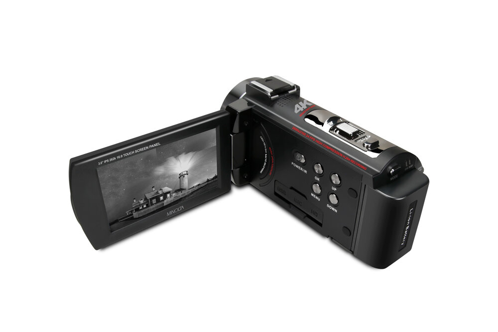
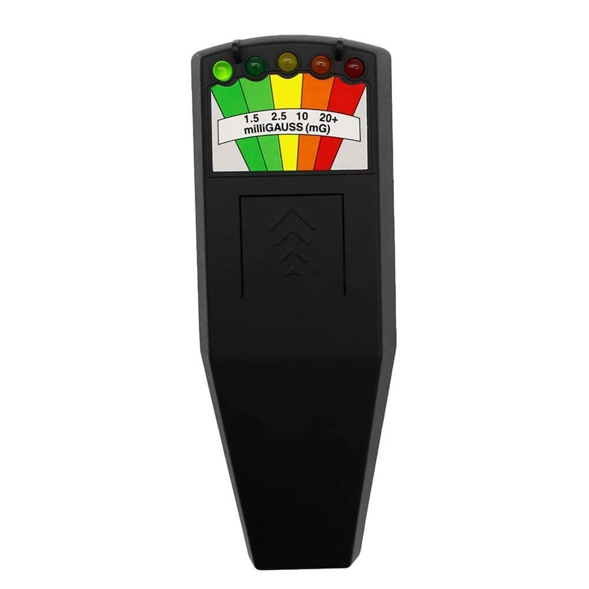
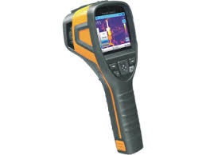
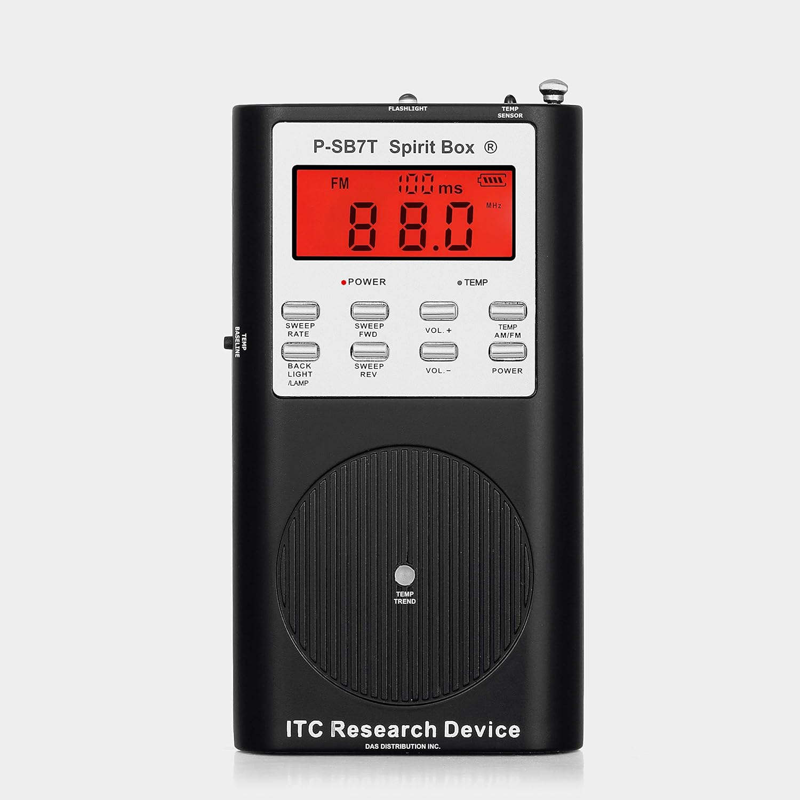
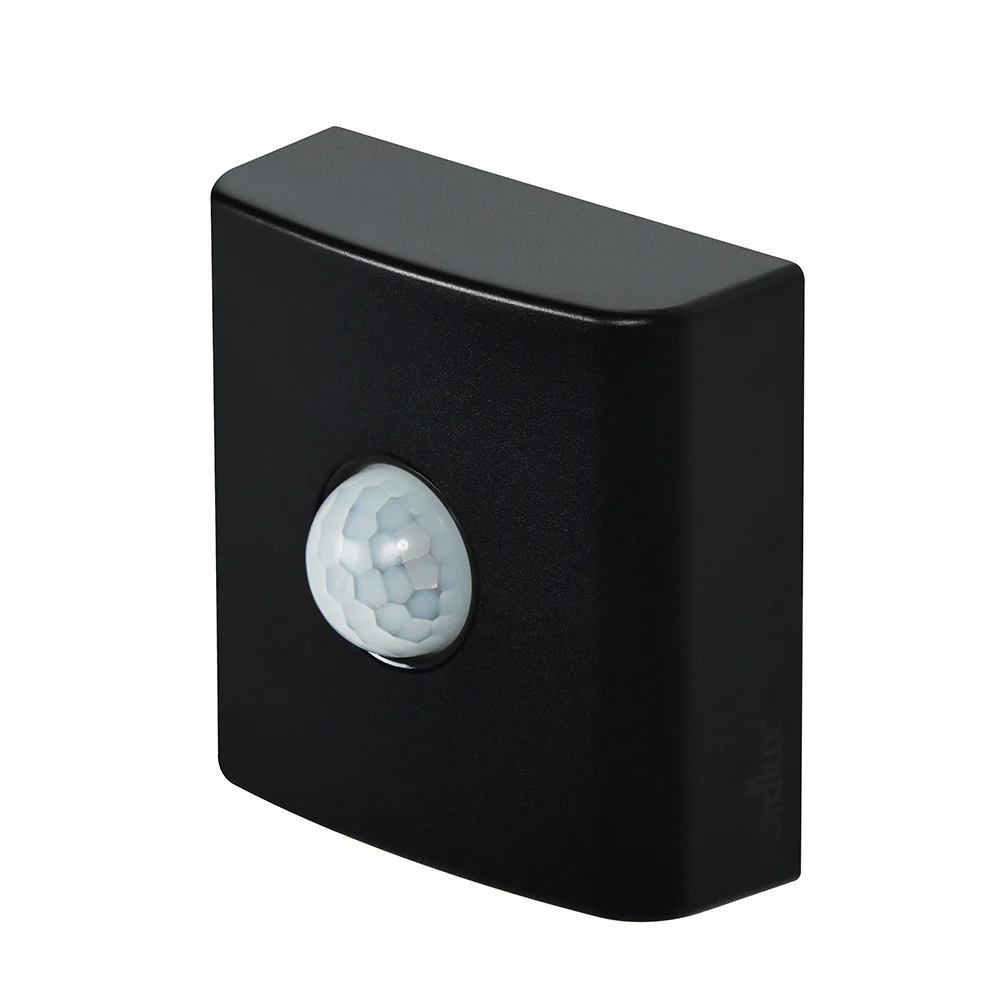

SZELLEMEK
Általános
Történetük
Kinézetük
Típusok
Tárgyak
Megtalálásukra alkalmas eszközök

Videókamera
Megfigyelhető maga a szellem egy biztonságos távolságból, vagy kézben tartva éjjelátóval interakciókat, paranormális eseményeket lehet felvenni vele

Electromagnetic Field Radiation Detector
Az elektromágneses mezők mérésére használják, mivel a szellemek egy interakció után egyfajta mágneses mezőt hagynak maguk után

Hőkamera
A "láthatatlan" dolgok megfigyelésére használják
Ouija Board
A szellemel való kommunikálás egyik legismertebb módja, egy kérdés hallatára a szellem szavakat alkotva válaszol

Spirit Box
A spirit box egy olyan eszköz, ami különböző frekvenciák között váltogatva fehér zajt generál

Motion Sensor
Mozgást érzékel egy adott térben, ezzel kimutatható hol tartózkodik a szellem